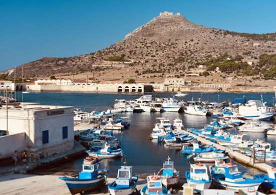

Favignana
La perla delle Egadi, celebre per il mare turchese e la tonnara.

Composizione anagrafica
Età medio-alta; consistente presenza di pensionati ed ex lavoratori legati alla marineria e alla tonnara
Economia di sussistenza e lavoro stagionale
Pesca, dipendenti comunali/servizi, edili; alta percentuale di disoccupazione stagionale post-estiva.
Indice di contrazione demografica
Circa 1:15 (da circa 3.200 residenti invernali a 45.000–50.000 presenze estive).